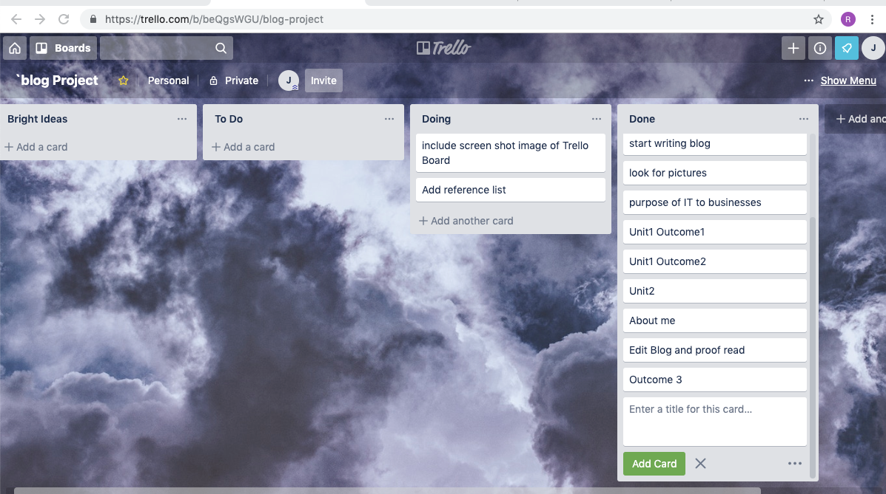

Benefits and drawbacks of IT tools
The benefit of the IT tools selected are numerous and these as been mentioned
on previous page2 the tool have been beneficial towards
- The planning of the project (Trello)
- time management for the project to meet submision deadline
- Coding/Programming/Designing and Execution of the project (HTML,CSS,Visual studio Code
- Hosting,Continuity,Perfromance Monitoring (git GitHub)

The bad sides of the selected IT tools are mainly from the fact that
they are Native platform Tools which mean thier function is restricted to
the Apple device which means i have to learn how to use another version of
these tools on other platforms which can confuse a system of assimilation of
anyone learning .
Could you have done it in teams?
I believe ajdnling this project as an individual as helped more rather
than doing it in a team. Single handedly handling this project
as given the chance to learn at full lenght the
basic functionalitys of the IT tool in use
doing this porject alos allowed me to showcase my creativity rathert han
confining to a group idea .
Best ways to improve productivity and efficiency
The biggest challenges of this project was time
and limited IT tools which did not allow for experimenting
and trying out other tools to know which woiuld have been best
adapted for teh project. The time to practice before actual project was insufficient
making it more of a trail or challenge project .
Develop solutions to improve own productivity using IT in digital projects
Ideally the use of Trello, Slack and GitHub towards
any digital project is paramount but it could be more
better if other expertise are involved in a didgital
project, for example some expert from a third party
organisation who is specialised in image or graphics creation
which would help in creating desired logos, images and designs
which can be used for a digital project rather than
having to source this image or graphical representation
via the google which could have legal impact of copy right
on this project .
would also be very efficient if theres is enough time to learn
and use javascript effectively to create more live feel
and actual functionality on the project .
Describe how you would go about testing digital solutions
All digital solution should be able to work with out defect on all Operating systems
and platforms
All digital project should be tested for performance making sure
all the fucntionaly and featurs work as programmed and specified.
I shal be testing my website on Firefox and Google Chrome to show charset
its compartibility on them .
My website will be pushed on GitHub and repositries will reveal
the process of changes and correction made towards the coding.